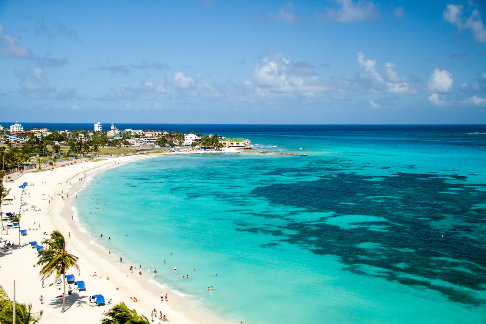
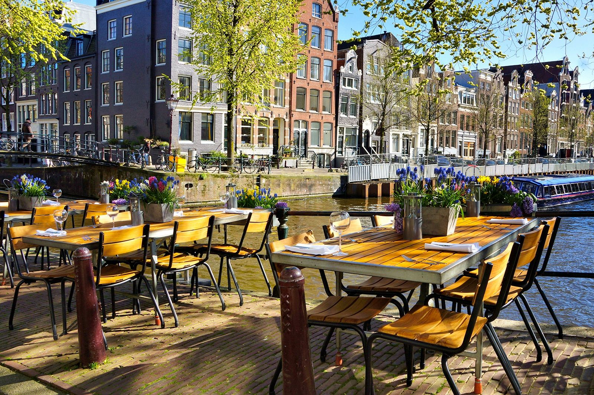

Playa Vista Eterna
La playa principal de la ciudad, ideal para relajarse y disfrutar del atardecer.

Paseo del Horizonte cuenta con espacios únicos diseñados para el descanso, la aventura y el entretenimiento de toda la familia. No te pierdas nuestros puntos más destacados:
La playa principal de la ciudad, ideal para relajarse y disfrutar del atardecer.

Un mirador histórico con las mejores vistas panorámicas de la costa.
El centro de la ciudad donde encontrarás los mejores restaurantes y comidas locales.
